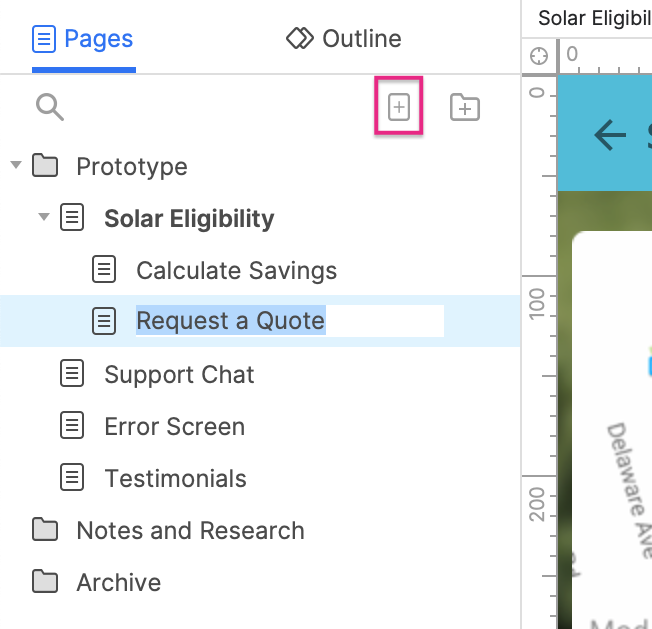
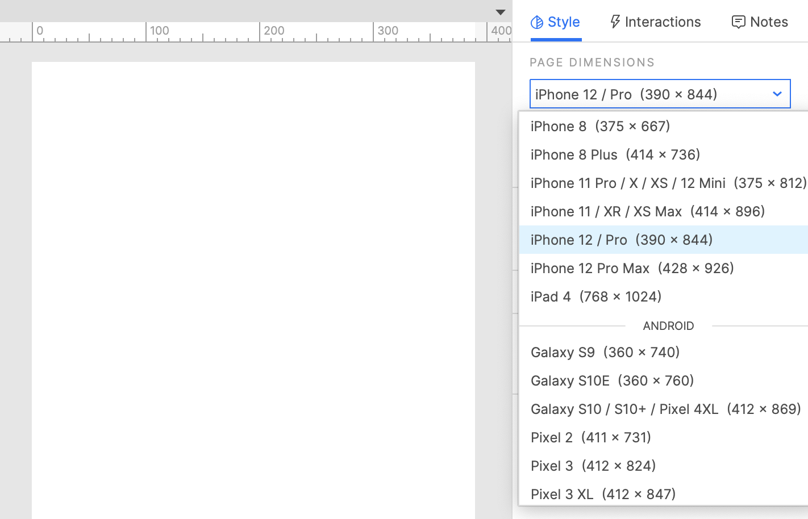
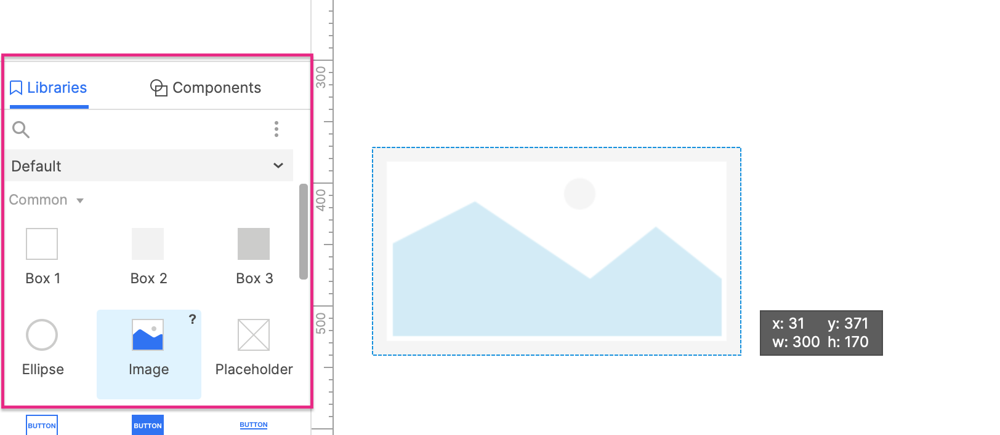
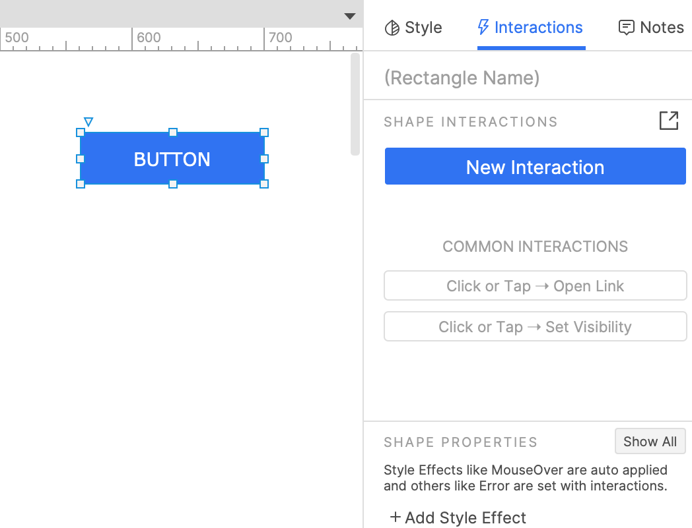
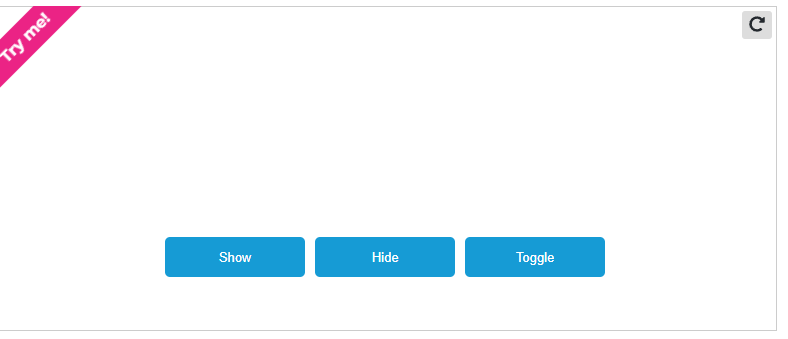

In this introductory guide, you'll learn the basics of creating and sharing prototypes. You’ll learn about pages, widgets, and interactions. You'll also learn how to view your prototypes in a web browser and share them with Axure Cloud.
Axure RP files are organized into pages, which you can manage in the Pages pane. To add a page, click the Add Page button at the top-right of the Pages pane. Double-click a page's name in the Pages pane to open it on the canvas
The canvas is where you'll build your designs. You can work without boundaries, or you can set page dimensions based on the target device you're designing for.
You’ll build your designs using widgets, which are organized into libraries in the Libraries pane. Axure RP comes with four widget libraries pre-installed — Default, Flow, Icons, and Sample UI Patterns — but you can also create your own or add libraries created by your teammates.
To add a widget to the canvas, drag it from the Libraries pane. You can also use the options in the Insert menu to add text, images, and shapes. To edit the text on a widget, double click it, or select it and press ENTER. To change the visual appearance of your widgets, head over to the Style pane. Many properties like fill color and font are also located in the style toolbar along the top of the canvas for quick access.
Once you have some widgets on the canvas, you can add interactivity to them in the Interactions pane.
It's simple and quick to create links between pages in your prototype.
In the Pages pane, add a new page. You should now have two pages, Page 1 and Page 2. On Page 1, drag a button widget onto the canvas from the Libraries pane. Select the button and click Click or Tap → Open Link in the Interactions pane. Select Page 2 in the list that appears and click OK. Click the Preview button at the top-right of the UI to open the prototype in your web browser. Click the button to go to Page 2.
You can also dynamically show and hide widgets on the page. Learn how in the Hiding and Showing Widgets tutorial.
You can use style effects to change a widget's visual appearance when it's moused over, clicked on, and more. Learn how in the Interactive Button tutorial.
When you're ready to show your work to your teammates and stakeholders, you can either publish to Axure Cloud for free, or to one of our private hosting solutions with Axure Cloud for Business. Click the Share button at the top-right of the UI and give your project a name and password. Then click Publish to get a shareable link to the hosted project.
Click the Share button at the top-right of the UI and give your project a name and password. Then click Publish to get a shareable link to the hosted project.